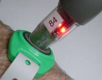

- Date
- Saturday July 1st
- Time
- 12 hour - 9 am to 9 pm, registration and course planning from 7 am
- 6 hour - 11am to 5pm, registration and course planning from 9.30am
- Cancellation
- This event will be cancelled only if conditions are extreme. The organisers reserve the right to shorten the event by time or geography for safety or other reasons.
- Location
- Registration and the post-event meal will be in the woolshed at Woodchester Station, at 1511 Leader Road West. It is 135km north of Christchurch. There is a green Woodchester sign at the gateway. The driveway is 6km long and can be wet, please take your time getting to the woolshed.
The event will start and finish at this location. - Accommodation
- Camping is not really an option
- Motels in Culverden and Cheviot and cabins at the Rotherham Hotel
- Map
-
The waterproof map will be A3 1:25000 and based on lidar data. This means 10m contours and vegetation. The colouring will follow orienteering maps:
- Yellow: Open Ground
- Green: The darker the fightier
- White: Open Forest
- Purple: Scrub
- Example Map
- 2022 Maps showing team routes
What is Rogaining?
A rogaine is a cross-country navigation event on foot, using a map and compass. This event will take you over a mix of challenging farmed and forested hill country with some scattered scrub and native bush.
Each person in your team (comprising 2 to 5 people) is given a standard topographical map with about 60 checkpoints of differing points value marked on it. A clue is provided for each checkpoint, e.g. “A saddle, N side”. Teams collect points by visiting checkpoints over the duration of the rogaine. The team with most points wins. Late finishers lose points.
As a team you choose your own route and distance within the mapped area. You decide which checkpoints to visit and in which order. You can be as competitive or as social as you choose. A team can go out ‘on course’ for the full time, or just a few hours. Water may be provided at one or more locations on the course. If they wish, teams can take a break at the hash house where hot food and drink is available from late afternoon. There’s an evening meal after the event too.
Plan your course well. Rogaining is as much about careful route choice and navigation as it is about physical endurance. For fit, first-time people, plan on about 2 to 2.5 kms per hour average over the whole event time. If you find you travel faster or slower adjust your course as you go.
Compulsory Equipment
Each team member
- thermal top and longs/tights
- thermal hat and gloves
- waterproof jacket and trousers
- survival bag/sheet
- whistle
- food
- torch/head torch (with fully charged batteries)
- water bottle/bladder
- suitable, robust, well-fitting footwear with well-treaded soles
Each team
- Personal Locator Beacon (compulsory for 12 hr. reccomended for 6 hr)
- first aid kit
- at least one compass
- watch
- pencil or fine spirit marker
- mobile phone (this must not be used as a navigational aid)
Flight Plan
Everyone must complete the flight plan before the event can start. Hand it in before you leave the registration hall. Enter your team number and plot your intended route on the flight plan map, including direction of travel. You may subsequently modify your route according to conditions as you progress, but the flight plan will give us an idea of where to start looking if you are in trouble.
For further information check out the NZRA website rogaine.org.nz.
Can I do this?
So you have done some 2 hour events or even longer. This is the time to step up. You can do it! This is about having fun with your team mates.
If you are not sure, let us know with your entry. Or talk to someone at the registration desk.

Look at the map. The lines (see through 68) are magnetic north which is where your compass will point. From the track (dashed line) you should be able to follow the fence to 26. From there your should be able to continue following the fence to 43 but beware, the first part is down a hill to the creek bed. (Check that there is a stream junction there abouts.) Then you have to climb back up another hill. But when you are there you should have an easyish route to 104.
Contacts
- Event
- Renee Dampier-Crossley - crossley@amuri.net
- Entries
- Wayne Millow - entries@rogaine.org.nz
- Acknowledgment
- The Amuri Basin team is organising Heights of Winter with assistance from NZRA
Hazards
- Hypothermia. Wind, water and cold temperatures can lead to exposure or hypothermia. Early symptoms are subtle (clumsiness, lethargy, slurred speech). Be prepared to seek shelter or to call it a day if conditions are severe, or if any of your team is becoming exhausted. Roads will be patrolled from time to time through the day. In severe weather, keep off high, exposed ridges.
- Dehydration. Drink lots of water. Water drops are marked on the map. (We recommend you don’t drink from local streams).
- Streams. Do not cross streams if they are heavily swollen.
- Cliffs, slippery rocks, loose rocks, incised creeks, gullies, slippery grass, hidden obstacles such as logs, loose fencing wire, etc. may be present throughout the event area.
- Collapsed tunnels or ‘under-runners’, especially on farm tracks.
- Fog/low cloud. If in fog, orientate the map and yourself with a compass. If in doubt, don’t climb into cloud, and descend out of it as soon as possible.
- Road Hazard: There will be light traffic on roads. No roads are closed during the event.
- The Road Code applies at all times: keep to the side of the road and be alert to traffic. We recommend you wear hi-viz clothing from dusk.
- Hunters: unlikely on this course, but be alert – if in doubt be visible and vocal.
- Deer fences (1.8 m netting). Please cross at corners, main posts, or gates. Paddocks that contain farmed deer are out of bounds and may be identified as such on the map.
- Electric fences. Usually the top wire, but sometimes a lower wire, may be hot (look for insulators on the post). Some fences have outriggers that may be hot. Treat all as ON. Climb through lower wires, or use a coat, pack or map for insulation.
- Stock. There is stock over the whole course. They are generally not a hazard, but be alert and avoid crowding any stock into a corner.
Navlight Instructions
The navlight scoring system will be used. Each team will be issued with two tags which must be fitted using the supplied wrist-band to two team members. For a mixed team one member of each sex must wear a tag. Each of these team members must record their visit at each punch. The last to register is the allocated time.
 A Punch
A Punch
Punch registering in a Tag
The NavLight system has two main components; the Punches and the Tags. The Punches are powered by one AA battery and hang from a cord at each checkpoint. The Tags are un-powered and are worn on the wrist by the competitors. They are attached with a security band.
When you visit a checkpoint you record your visit by inserting the Punch into the Tag; a process which typically takes half a second. A red light flashes regularly to indicate that your visit has been recorded.
Apart from the Checkpoint Punches, there are some special-purpose punches which you MUST be aware of. They look the same as normal Punches but have been allocated a special Status.
- Use a BRIEF Punch before the event start.
- Use a FINISH Punch whenever you return to the Administration area.
- Use a DEPART Punch if you have returned and go out again.
After you have used the FINISH Punch at the end of the event an organizer will remove your tag from your wrist (do not remove it yourself) and it will be scored. Wait for your printout which will look something like this: (Start time was 6:40:00 PM.)
Team No. 62 Tag ID = ACBA Tags=0017
Line # PunchID Value Time Punched Split Time.
1 66 21/12/2005 6:35:41 PM BRIEFING. Score reset.
2 26 20 21/12/2005 6:44:43 PM 0:04:43
3 21 20 21/12/2005 6:58:12 PM 0:13:29
4 30 30 21/12/2005 7:01:18 PM 0:03:06
5 48 40 21/12/2005 7:06:30 PM 0:05:12
6 37 30 21/12/2005 7:17:30 PM 0:11:00
7 53 50 21/12/2005 7:27:21 PM 0:09:51
8 38 30 21/12/2005 7:33:51 PM 0:06:30
9 38 21/12/2005 7:33:52 PM 0:00:00 Punched on Line 8
10 41 40 21/12/2005 7:44:20 PM 0:10:28
11 60 60 21/12/2005 7:56:10 PM 0:11:50
12 55 50 21/12/2005 8:02:56 PM 0:06:46
13 44 40 10/12/2004 1:05:20 PM Before Event Start.
14 61 60 21/12/2005 8:50:26 PM 0:47:30
15 28 20 21/12/2005 8:59:33 PM 0:09:07
16 64 21/12/2005 9:42:46 PM 0:43:13 FINISH TIME.
17 65 21/12/2005 9:42:52 PM 0:00:06 FINISH TIME Ignored.
END
Recognised finish time 21/12/2005 9:42:46 PM
Time on course 3:02:46
490 Points Scored.
30 Late Penalty.
Nil Manual adjustment.
FINAL SCORE = 460
Note that on line 13, the recorded time was a year early. This happens if the battery has been momentarily disconnected in the Punch sometime before you got to it. Although the time is wrong, you still get the points.
The function of special-purpose Punches is described in more detail below.
- TEST Punch. This is available at Registration for you to try your Tag to see how the system works. It has no effect on your score. If the red light flashes even once, it has worked.
- BRIEF Punch. One or more BRIEF Punches will be available shortly before the event start. You will usually find the BRIEF Punch as you enter the Briefing area; hence the name. Officials may inspect your Tag to ensure it is properly fastened on your wrist so it is important that each Tag is registered on one of these Punches BEFORE you start the event.
- FINISH Punch. Several of these will be available at the finish line. ALL team members with Tags MUST use one as you finish, as it records your finish time. For a team, the finish time is taken as the time of the last Tag to finish. If you return during the event, you should still use a Finish Punch. It doesn’t matter if you subsequently go out for more checkpoints, as long as you use a FINISH Punch again when you return. Earlier Finish times will be ignored.
- DEPART Punch. If you visit the administration area during an event, and use a FINISH Punch when you arrive, you must use a DEPART Punch when you leave again.
Fitting the wrist-bands
The wrist-bands are made from a rugged vinyl material and can not be removed from the wrist without breaking them. Wear them quite loosely; you should be able to fit two fingers comfortably between the band and your wrist. Over a 24-hour period, a tight strap will cause irritation.
Thread the band through your Tag, wrap it around your wrist, then close the clasp through one of the holes in the strap. There is a loose end which you can pull off carefully.


WHAT IF SOMETHING GOES WRONG
PUNCH FAILURE
If you encounter a Punch which fails to operate, write down its internal 3-letter Code as evidence that you have visited the checkpoint. This 3-letter code is visible through the transparent plastic cover. However, your team will be credited with the visit only if it can be verified that the Punch has indeed failed.
There is a possibility that the punch has temporarily lost its power. If so, you may have to wait for up to three seconds for a response.
TAG FAILURE
Again, you can only record the internal 3-letter Code inside each Punch you visit. You can rely on the other Tags in your team to record your visit, but tell the organizers when you finish. Your team will be credited with the visit only if it can be verified that your Tag did indeed fail.

It will be compulsory for teams in the 12 hr event to carry a PLB and recommended for 6hr teams. The cell phone coverage is pretty patchy over the course. PLB's can be hired see mountainsafety.org.nz.
Waterproof jacket AND trousers are compulsory in the 12hr event and strongly recommended for the 6hr.
While a lot of the course is reasonably dry (at the moment) there are muddy/slippy bits so make sure you have shoes with a good aggressive tread.
There is plenty of good flowing water on the course. There are unfortunately not many places where we can usefully place water stops, so if you are concerned about drinking the water, then you may want to bring a water filter. Also we would like the 6hr teams to carry enough water and leave the water stops for the 12hr teams.
You need to allow 15-20 minutes for the 6km drive into Woodchester from the Leader road. Also 4WD/AWD cars would be a good choice where possible. If possible use one vehicle per team
Any late updates (especially weather related) will be on the facebook page.
For further information contact Wayne Millow or check out the NZRA website rogaine.org.nz